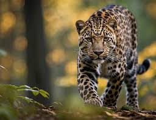
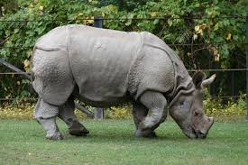

.jpg)
Sumatran Tiger
The Sumatran tiger is a subspecies of tiger found on the Indonesian island of Sumatra. It is the only remaining tiger population in the Sunda Islands, as the Bali and Javan tigers are extinct. |

Amur Leopard
The Amur leopard is a subspecies native to southeastern Russia and northern China. It is critically endangered, with only 19-26 wild leopards estimated to survive in the region as of 2" |

Javan Rhino
The Javan rhinoceros is a critically endangered species and one of the five remaining rhino species. It is found in South Asia and belongs to the Rhinoceros genus. |
.jpeg)
Mountain Gorilla
Mountain gorillas are an endangered subspecies with about 1,060 individuals remaining. They live in the Virunga mountains and Uganda’s Bwindi Park. Some believe the Bwindi group could be a separate subspecies. Conservation efforts have helped their population grow. |
.jpeg)
Sumatran Orangutan
The Sumatran orangutan is a critically endangered species found only in northern Sumatra. It is rarer than the Bornean orangutan but more common than the Tapanuli orangutan. Its name means person of the forest. |
.jpeg)
Black Rhino
"The black rhinoceros, or hook-lipped rhinoceros, is native to eastern and southern Africa, including countries like Kenya, Tanzania, and South Africa. Despite its name, its color ranges from brown to grey. |
.jpeg)
White Tiger
The white tiger, occasionally seen in the Indian wilderness, has black stripes like a regular tiger but a white or near-white coat and blue eyes. |
.jpeg)
Siberian Tiger
The Siberian tiger, or Amur tiger, is a subspecies of tiger native to Northeast China, the Russian Far East, and possibly North Korea. |
.jpeg)
Sea Otter
The sea otter is a marine mammal from the North Pacific, known for its thick fur. Weighing 14-45 kg, it’s the heaviest weasel family member but one of the smallest marine mammals. It can walk on land but lives mainly in the ocean. |
.jpeg)
Bengal Tiger
The Bengal tiger is a large tiger subspecies found in India, Bangladesh, Nepal, Bhutan, and southwestern China. It has lived in the Indian subcontinent for 12,000 to 16,500 years and was once found across a much larger area. Today, it faces threats from poaching, habitat loss, and fragmentation. |
.jpeg)
Indian Elephant
"The Asian elephant, native to mainland Asia, is smaller than the African elephant. Males can reach 3.2 m in height and weigh up to 5,400 kg, while females are smaller. It has a broad skull, large ears, and smooth grey skin. |
.jpeg)
Red Panda
The red panda is a small mammal from the eastern Himalayas and southwestern China. It has reddish-brown fur, a black belly, and a ringed tail. Weighing 3.2 to 15 kg, it’s skilled at climbing with flexible joints and curved claws. |